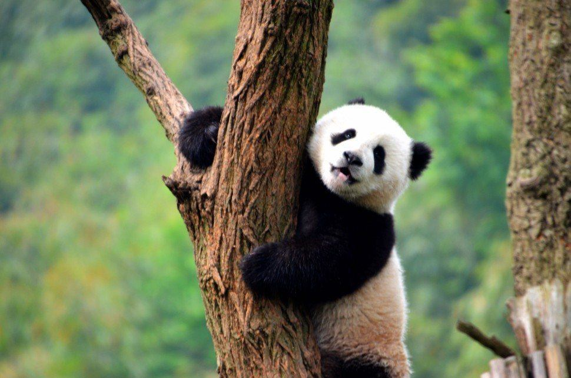
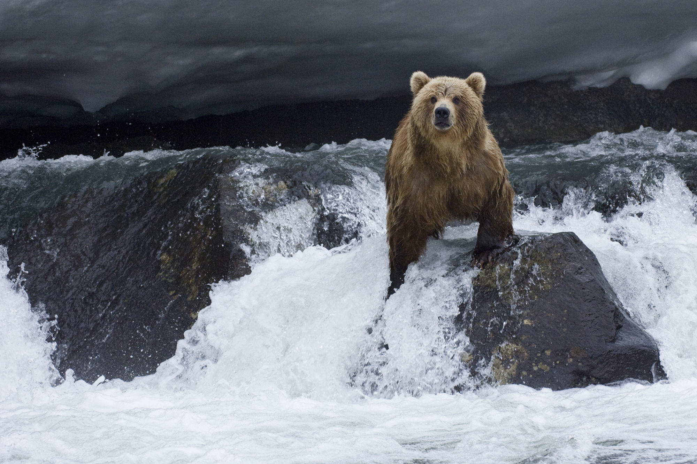
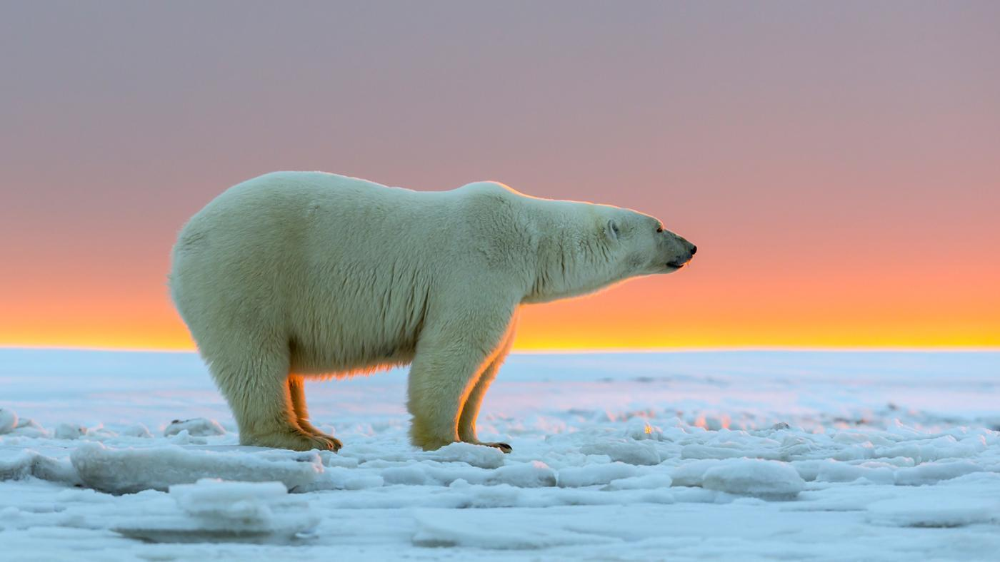

  
Bears are some of the world's largest land mammals. Bears have inhabited almost every enviroment on Earth. A species of bear can be found on every continent except Australia. Over the course of history fossil records have indicated that hundreds of species of bears used to inhabit the Earth. However, today there are only eight known species.
The table below provides indepth information on each of the eight known species of bear.
| Bear Species | |||
|---|---|---|---|
| Species | Location | Description | Diet |
| American Black Bear | The Black Bear roams throughout North America stretching from southern Florida to Alaska. | This bear sports a black or dark brown coat. They typically weight close to 600 poinds and live around 25 years. | Black Bears are omnivorse typically eating vegetable items. |
| Brown Bear | The Brown Bear can be found in northern terrain or North America. Their territory includes Alaska, Canada, and area in Montana, Wyoming, and Washington. | Brown Bears vary in both size and color. The color of their fur can range from black to light-brown or blonde. In addition, their size ranges with the largest individuals weighting in close to 1,500 pounds. | These bears feast of vegetable items along with Salmon and other fish species found in nearby rivers. |
| Polar Bear | Polar Bears live in some of the coldes regions on Earth. The majority of these animals live within the artic circle. | Polar Bears are the world's largest bear. Their fur coats are completely white with adult males typically weight close to 1,760 pounds. | Polar Bears are carnivorious animals eating a variety of sea-life including fish, seals, and penguins. |
| Asiatic Black Bear | This black bears lives exclusively in Asia. Their territory includes Aghanistan, Cambodia, China, India, Japan, Mongolia, and Russia to just to name a few. | Like their name suggest their coat is entirely black except for a distinct white patch on their chest. | Asiatic Black Bears feed on small mammals, birds, grass, insects, berries, and fish. |
| Andean Bear | The Andean Bear lives only in the Andes Mountains of South America | This short-faced bear are small compared to some bears with adult males typically weighting around 400 pounds.Their coats are mostly black except for a large white patch that covers their face. | Andean Bears rely mostly on a carnivorious diet eating small mammals and bird of the region. |
| Panda Bear | Due to loss of habitat the Panda Bear is restricted to only six mountain ranges throughout China. | Panda Bears' coat is both black and white. Their legs and ears are typically black with their bodies white. In addition, their head is entire white except for black rings around their eyes. | Panda Bear survive by eating only bamboo. |
| Sloth Bear | Sloth Bears live in India, Nepal, Bhutan, and Sri Lanka. | The Sloth Bear is the second smallest bear weighting in around 200 pounds. They have short legs with long, black fur with a Y shaped white spot on their chest. | These bears feed entirely off insects. Their favorite are termites which they suck out of rotting logs. |
| Sun Bear | Sun Bears reside in southeast asia. The countries they inhabit include Cambodia, India, Malaysia, Vietnam, and Thailand. | Sun Bears are the world's smallest bear. Fully grown adult males only weight around 140 pounds. Their fur is short, dark brown in color, and have a distinctive yellow crescent shaped spot on their chest. | Similar to the Sloth Bear, Sun Bears survive on insect with their favorite meal being termites. |
Unfortunatley, mankind has had a severe impact on the world's bear species. Today, one species is endangered and a number more are listed as "threatened." The Panda Bear is the most endangered species with only 1,600 remaining. In addition, Polar bear population numbers are dramatically falling due to the quick reduction in sea life due to climate change. However, all bear species are being impacted by human activities thats leading to fall population numbers worldwide. Some of the factors include:
To read more information on Bears, please visit: This website.